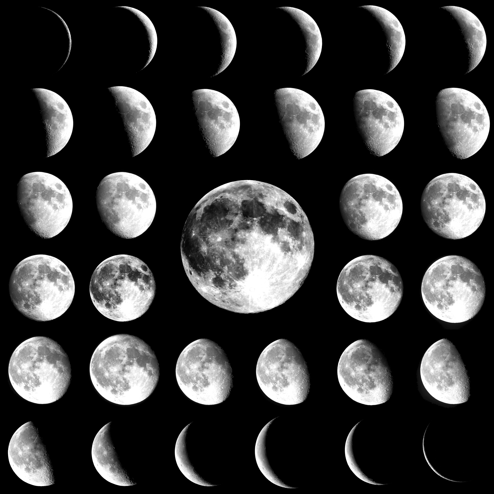

Jupiter has 63 known moons. The first described are the Galilean moons discovered by Galileo Galilei in 1610. The moons Europa, Ganymede and Callisto are ocean-type, and Io is volcanic type. The orbits of Io, Europa and Ganymede are in a Laplace resonance - for every four orbits of Io, Europa makes two, and Ganymede makes exactly one. This effect stretches their orbits in the form of ellipses. From another side the strong tidal forces of Jupiter, try to make the orbits of its satellites nearer circular. When the moons are closer to Jupiter, the gravity of the giant planet deforms its satellites shape in ellipsoid, allowing them to recover their normal spherical shape only when they are away enough.
These cycles heat the satellites inside, much on Io and less on Europe. Io is the celestial body with the most powerful volcanic activity in our Solar System, except the Sun.